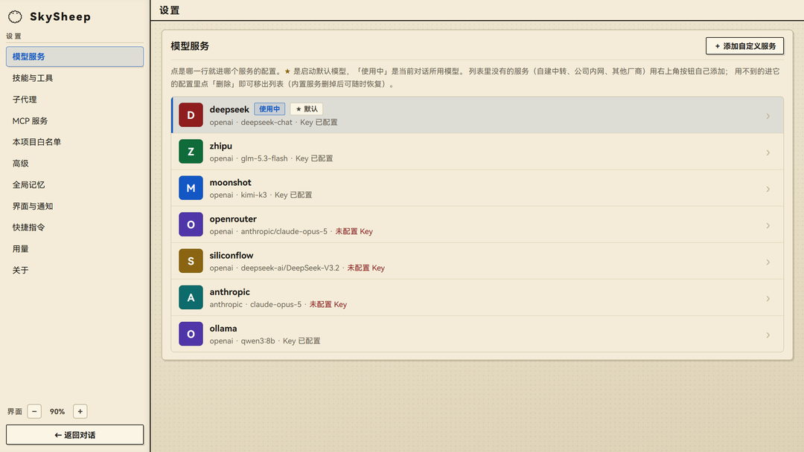
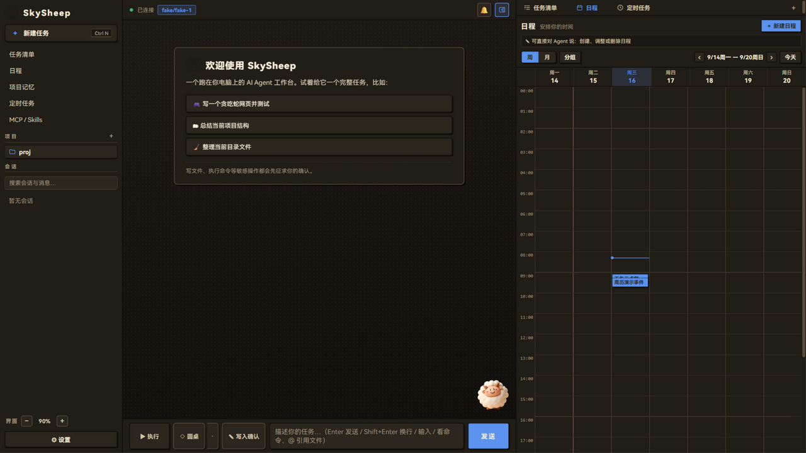
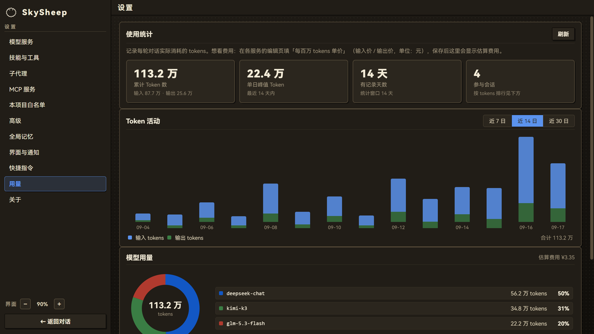

☁️ 三重安全承诺
敢让它动手，也随时能后悔
这是 SkySheep 与所有聊天客户端的根本差异：Agent 真正执行操作，但每一步都在你的视线之内。
壹
敏感操作先确认
写文件先展示 diff 逐行过目，执行命令逐次确认；拿不准的操作，不放行就跑不了。
贰
数据全在本机
会话与配置存于本机 SQLite，无账号、无遥测，数据不出你的电脑。
叁
检查点一键回滚
每轮改动自动快照成检查点，改坏了随时一键恢复到上一刻。
功能
小羊的十八般武艺
从一个对话窗口，长成真正能干活的桌面工作台。
🔌
多模型服务
智谱、DeepSeek、Kimi、OpenRouter、Anthropic，以及 Ollama 本地模型，填好 API Key 一键接入。
🧩
MCP 与技能扩展
兼容 Claude Desktop 的 MCP 配置，技能广场一键安装，能力随取随用。
🖱️
电脑控制
截屏、鼠标、键盘自动化，全程确认制 + 动作级白名单，边界由你划。
⏰
定时任务与日程
周期任务到点执行、支持提醒，手机可在局域网直接访问工作台。
👥
圆桌多模型
多个模型并行作答，「主席」模型融合众长，给出更稳的结论。
📄
文档读写
PDF / Word / Excel 读进来，Word / Excel / CSV 写出去，报告一键生成。
📊
用量仪表盘
token 用量与费用估算一目了然，花在哪、花多少，心里有数。
🈶
中文优先
界面、帮助、快捷指令全为中文场景设计，本地模型中文对话同样顺滑。
☁️ 截图
眼见为实
纸墨浅色与夜墨深色两套主题，都长在桌面上。



快速开始
三分钟跑起来
下载即用，或者从源码亲手拉起来。
方式一
下载安装包
- 前往 GitHub Releases 下载最新版安装包（Windows）。
- 双击安装，完成后启动 SkySheep 即可。
- 首次运行若被 SmartScreen 拦截，点击「更多信息 → 仍要运行」，详见仓库说明。
方式二
从源码运行
git clone https://github.com/Sky-scrape/SkySheep.git
cd SkySheep/engine
uv sync
uv run skysheep app需要 Python ≥ 3.11 与 uv；桌面壳基于 pywebview / WebView2，也支持 --browser 兜底。